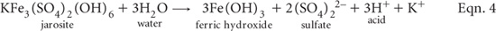

Minerals such as jarosite and other insoluble SO42– containing compounds present in the soil are largely unaffected by peroxide oxidation. Occasionally, however, the acidity held in these compounds can be much greater than the sulfidic or actual acidity, particularly when these soils are partially oxidised. Retained acidity needs to be taken into account in acid base accounting and when attempting to make accurate liming recommendations. The SRAS result can be converted to an acid equivalent (a-SRAS) by multiplying %S by 467.8 to convert to equivalent units of mol H+/tonne (Ahern et al. 2004b; see Note 1).
After peroxide digestion and TPA titration, the soil residue may contain insoluble S (e.g. in jarosite or similar relatively insoluble Fe and Al hydroxy sulfate compounds) either present initially in the soil or (less usually) formed during peroxide oxidation. This S represents a store of retained acidity that may be estimated after overnight (16 h) extraction with 4 M HCl of the washed soil residue following determination of SP by Method 20E1. On soils where the presence of jarosite is suspected (e.g. if the pHKCl is <4.5 or jarosite has been noted in accompanying field sampling notes) it is strongly recommended that residual acid soluble S (i.e. SRAS) be performed.
4 M Hydrochloric Acid
As for Method 20F1.
1 M Potassium Chloride (KCl)
Prepare as for Method 4C1.
Proceed from the end of Method 20E1. When performing this residue analysis, first take a suitable volume of filtered solution for SP and corresponding cation analysis (CaP and MgP), then continue to filter the entire soil suspension (transferring all soil residue to the filter paper).
After filtration is complete, wash filter paper with 2 × 10 mL of 1 M KCl then sufficient deionised water (e.g. 4 × 10 mL) to ensure all soluble and adsorbed SO42– has been washed from the soil/filter paper.
When washing is complete, place filter paper (containing washed soil residue) into a suitable extraction bottle and add 80 mL of 4 M HCl. Extract overnight (16 ± 0.5 h), preferably on an end-over-end shaker. Following extraction, filter using thick, medium-speed, high-retention filter paper (or decant and centrifuge) to obtain particle-free extracts.
Determine residual acid soluble sulfur (SRAS) using a suitable technique (ICPAES preferred) and an appropriate range of standards, guided by details provided in Method 20F1.
Report peroxide residual acid soluble S (SRAS; % S) on an oven-dry (85°C) basis.
1. The factor 467.8 is a consequence of the acid-generating stoichiometry of S in jarosite. It ignores adjustments to subsequent liming rate associated with an application-rate safety factor and adjustments for fineness and neutralizing value of the limestone, the latter as discussed in Note 1, Method 16A1. Specifically, when one mole of jarosite containing 2 moles of S is hydrolysed (see Eqn. 4), 3 moles of H+ are generated, which contrasts with 4 moles from pyrite. Hence, the factor for jarosite is 0.75 times the factor for pyrite: i.e. 623.71 × 0.75 = 467.8.
